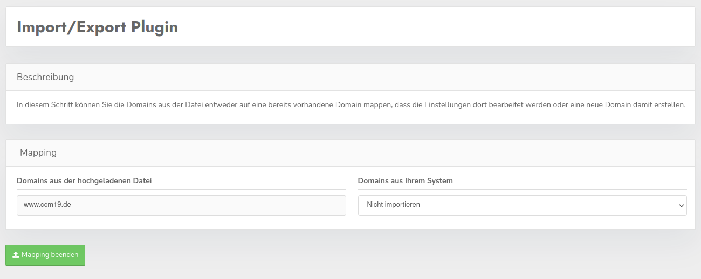
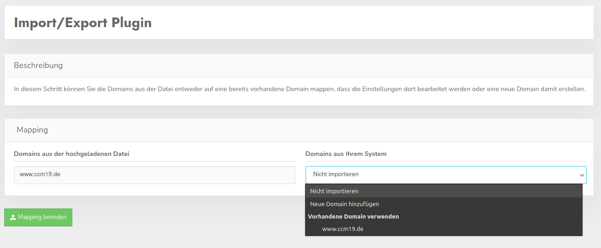

Mit diesem Plugin bekommen Sie die Möglichkeit, über das Backend bestimmte Daten aus einer Domain oder direkt mehrere Domains aus einer CCM19-Installation zu exportieren und diese Daten wieder importieren zu können. Alle exportierte Daten werden als .json Dateien ausgegeben und können per Hand natürlich angepasst werden.
Wenn Sie sich in der Übersicht Ihrer Domains befinden, haben Sie dort die Möglichkeit ausgewählte Domains Ihres Accounts zu exportieren und einzelne bis mehrere Domains zu importieren. An dieser Stelle lassen sich nur alle Daten einer Domain exportieren, jedoch haben Sie in der Ansicht der Domain selbst die Möglichkeit, einzelne Teile einer Domain zu exportieren.

Nach dem Versuch eine oder mehrere Domains in der Übersicht zu importieren, können Sie sich, um den Import komplett kontrollieren zu können, aussuchen was mit jeder Domain aus der hochgeladenen Datei passieren soll.

Nun können Sie als Möglichkeit für jede Domain entweder eine Domain überschreiben, indem Sie den Namen dieser auswählen, eine neue Domain hinzufügen oder sich entscheiden, nichts mit einer Domain aus der Datei zu machen.

Wenn Sie das Plugin in einer Domain verwenden, haben Sie jetzt die Möglichkeit, einzelne Teile einer Domain zu exportieren und wieder zu importieren. Achten Sie aber auf die Info-Buttons für einzelne Punkte, da diese wichtige Informationen über das Verhalten könnten.
Sie haben die Möglichkeit, eine Export-Datei mit mehreren enthaltenen Domains auch im Import der Ansicht in einer einzelnen Domain zu verwenden, jedoch kann dort nur die aktuell aktive Domain überschrieben werden. Genauso ist es auch möglich, die Datei aus der Ansicht einer einzelnen Domain genauso anders-herum zu verwenden, selbst wenn nicht umbedingt alle Daten in diesem Export enthalten sind, werden die Daten verwendet die sich ind er Datei befinden.